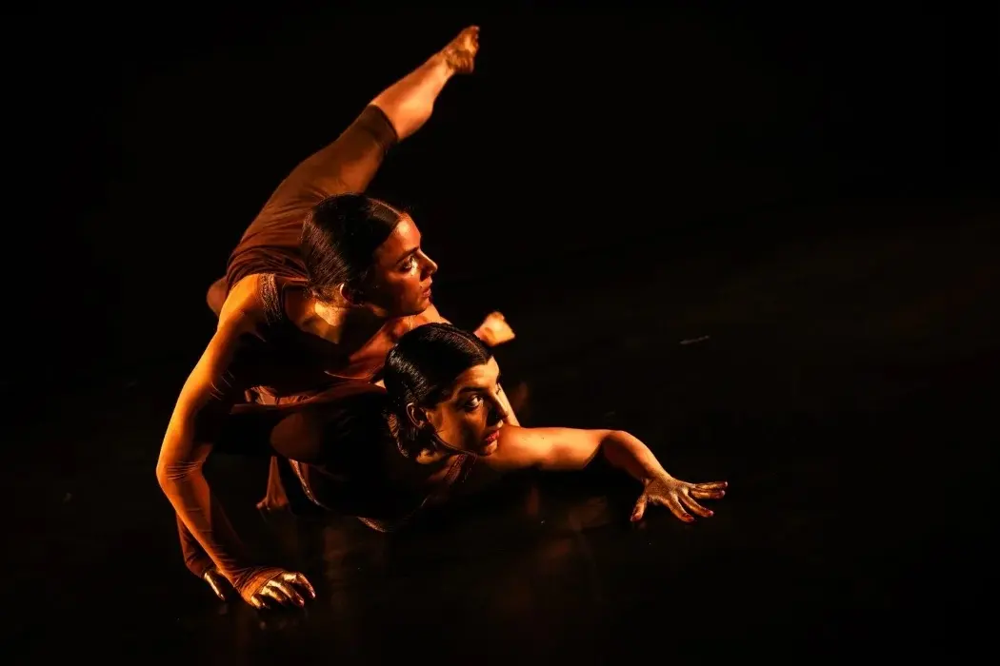
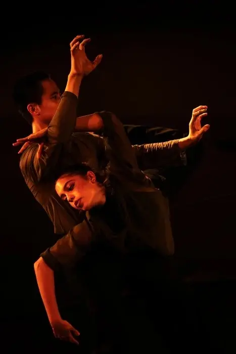
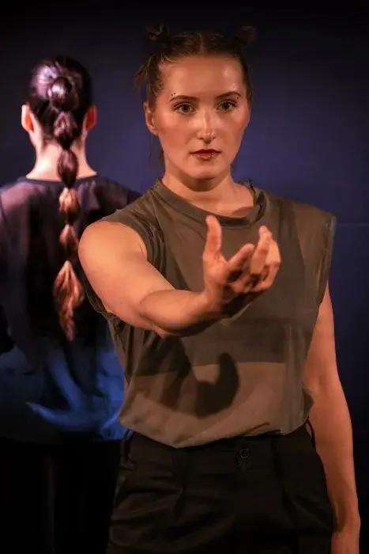
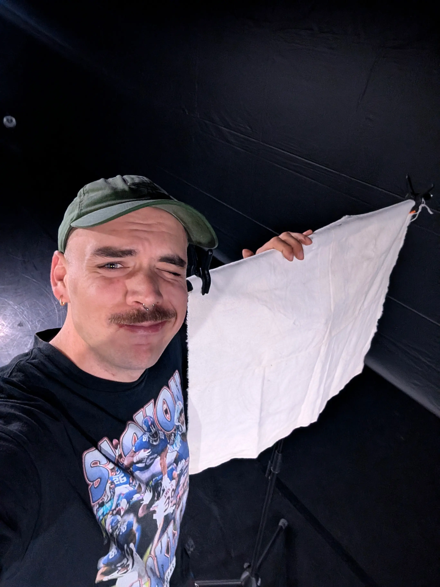

Photo: Ingo Höhn
Photo: Ingo Höhn
Next Matters - 2026

Penelope - Grazia Scarpato
Penelope weaves by day and unravels her own work by night. She does this on purpose to delay her father’s remarriage. Handicrafts, long dismissed with contempt as «women's work» become a highly efficient tool here for deceiving everyone around her. The approach taken by the female character from Homer’s «Odyssey» is symptomatic and serves as an example for countless women who have succeeded and continue to succeed in outwitting dominant systems through subtle, inconspicuous actions. During further research for her piece, the choreographer then discovered that similar behavior can also be observed in animals in nature. Known there as «cryptic female choice», it refers to a form of invisible control in which females, through hidden biological processes, determine reproductive success themselves after mating. On the surface, they appear to follow the rules, yet they find quiet ways to arrive at decisions of their own choosing. Inspired by this, the choreographer created hybrid beings human, yet with animalistic traits who act on stage with a combination of intelligence and instinct, seemingly following rules, yet persistently asserting their own will.
Klecks / Ineffables / Rorschach’s Cat - Kany Michel Obenga
Three titles in three different languages point to the impossibility of translating with absolute precision: How does one find the “correct” interpretation of the original when translating? How does the meaning of art reach us, especially when something that was originally perceived visually is to be conveyed through language? How adequate are the spoken and written word in this context? Through dance, the choreographer explores what is actually indescribable—what eludes us and vanishes the moment it comes into contact with words, because words are usually assigned very concrete meanings.
Voices in the Outer World - Senn Hoogwerf
The dance solo is inspired by the «Dune» novel series and its film adaptations. It retraces the emotional journey of the character Paul Atreides. At the beginning, he is a young man, full of curiosity, shaped by duty, family, and prophecy. But what begins in the light gradually sinks into darkness. As fear, loss, and violence intensify around him, Paul finds himself forced to survive in a world that demands constant change and adaptation from him. He is torn between humanity and destiny. The acquisition of power is accompanied by a state of isolation and inner turmoil. The choreography explores how grief, visions, and ambition transform a person—and what remains once innocence is lost.
Production Team
- Cast TanzLuzern
- Choreography Senn Hoogwerf, Kany Michel Obenga, Grazia Scarpato
- Lighting Design Michel Delaloye
- Dramaturgy Wanda Puvogel
- Video Design «Voices in the Outer World» Rebecca Stofer
- Voice-over «Klecks / Ineffables / Rorschach’s Cat» Max Faatz
- Operator Sound Franzisca Rüedi
Photo: Ingo Höhn

Photo: Ingo Höhn
Photo: Ingo Höhn Photo: Ingo Höhn
Photo: Ingo Höhn
 Photo: Ingo Höhn
Photo: Ingo Höhn
 Photo: Michel Delaloye
Photo: Michel Delaloye

Photo: Michel Delaloye